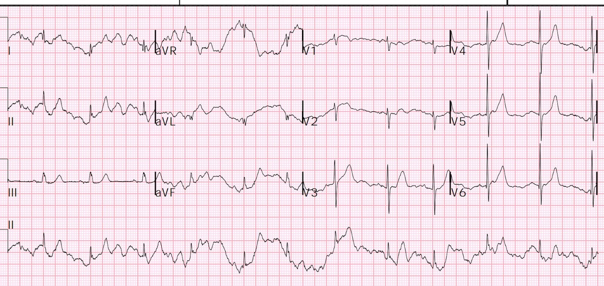
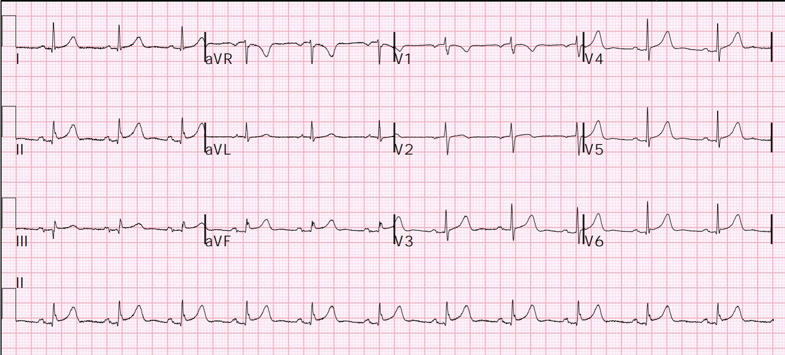
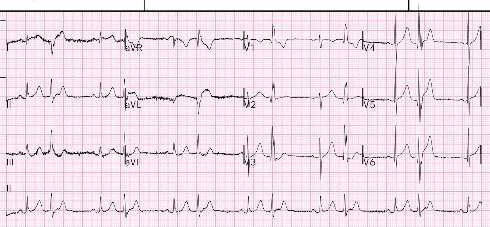
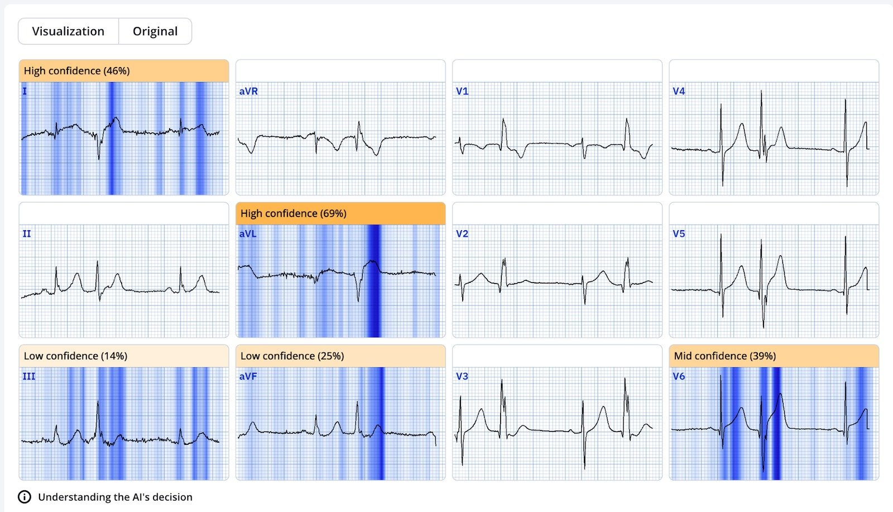
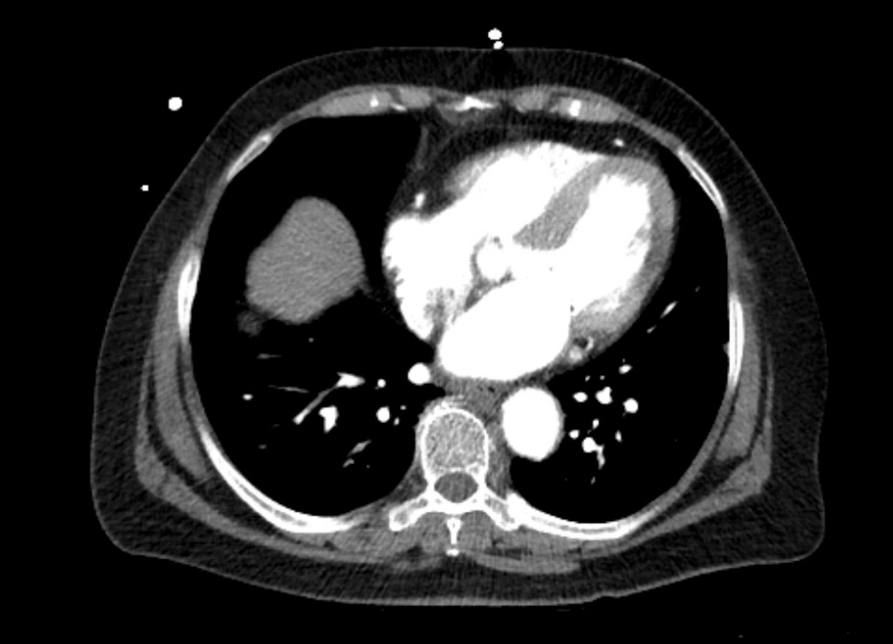
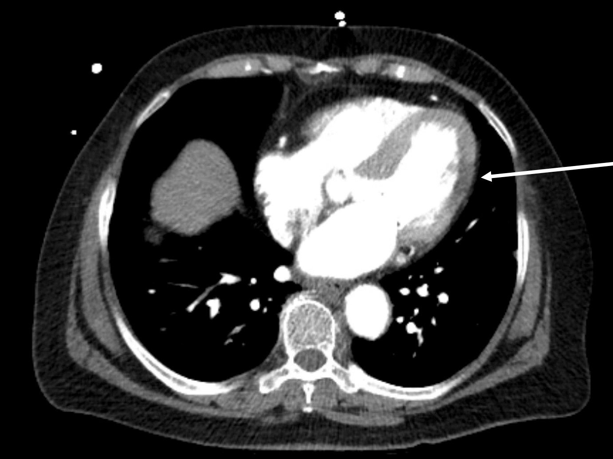
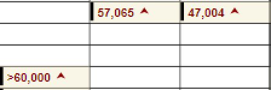
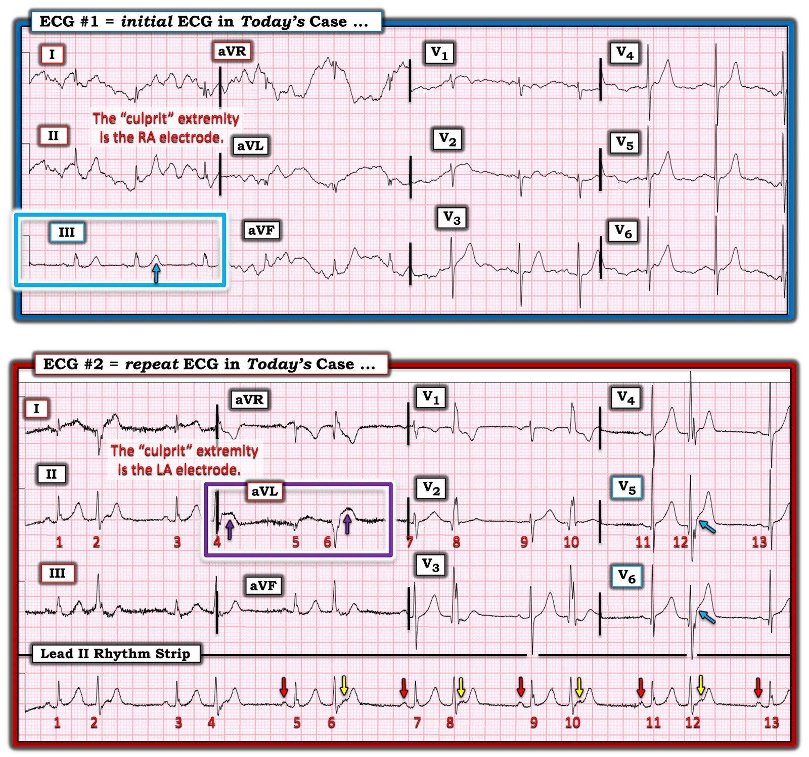

23/11/2024 — Đau ngực (hay đau bụng?) và nhiễu điện tâm đồ.
Bản dịch tiếng Việt của bài "Chest (or abdominal?) pain and ECG artifact." – Dr. Smith’s ECG Blog. Giữ nguyên toàn bộ 9 hình ảnh của bản gốc.
Một phụ nữ cao tuổi đến khám vì đau ngực và đau tay phải đã một ngày, kèm theo đau bụng. Có kèm cảm giác châm chích và tê bì ở bàn tay phải và yếu toàn thân, nặng hơn ở bên phải.


Một điện tâm đồ lúc phân loại (triage) được ghi:
Smith: có nhiễu (artifact) lan tỏa, ngoại trừ ở chuyển đạo III. Vì chuyển đạo III không bị nhiễu, có thể suy ra rằng nhiễu là do cử động của điện cực tay phải, vì vậy nên dời điện cực đó và ghi lại điện tâm đồ. Điều này làm cho việc đánh giá trở nên khó khăn.
Nhưng có thể thấy có một ít ST chênh xuống ở chuyển đạo III, điều này luôn phải khiến bạn nghĩ rằng đó là thay đổi soi gương (reciprocal) của một ST chênh lên (STE) nào đó, thường là rất nhỏ, ở aVL (của OMI vùng bên cao). Do đó, phải soi kỹ aVL, I và V2, nhưng các chuyển đạo này lại bị nhiễu làm biến dạng.
Điều này cực kỳ dễ bị bỏ sót, trừ khi có mức nghi ngờ OMI cao.
Nhiễu do điện cực của một chuyển đạo chi đơn lẻ được giải thích ở đây, trong một ca nhiễu do mạch đập động mạch (APTA): Bizarre (Hyperacute??) T-waves (Sóng T kỳ quái (tối cấp??))
Diễn tiến lâm sàng: Người khám đã nhận ra nhiễu, nhưng không thấy điều gì đáng lo ngại và lấy làm tiếc vì đã không chỉ định ghi thêm một điện tâm đồ khác.
Các xét nghiệm, bao gồm troponin, đã được chỉ định và bệnh nhân phải được xếp vào phòng chờ trong khi đợi giường.
Lần sau khi người khám xem kết quả xét nghiệm, mới nhận thấy troponin đầu tiên là 45.000 ng/L. Như vậy đây là một nhồi máu cơ tim lớn, nhưng là bán cấp.
Có một điện tâm đồ trước đó để xem lại:


Bản ghi này cho thấy ST chênh lên nền ở các chuyển đạo dưới, bao gồm cả chuyển đạo III.
Vào thời điểm ghi bản này, không có nhồi máu cơ tim; đây là ST chênh lên nền (biến thể bình thường)
Điện tâm đồ trước đó này xác nhận rằng ST chênh xuống (STD) ở chuyển đạo III là rất bất thường
Do troponin rất cao, bệnh nhân được chuyển vào khu hồi sức cấp cứu và một điện tâm đồ khác được ghi:


Nhịp xoang kèm PVC
Có ST chênh xuống ở các chuyển đạo dưới, cùng với ST chênh lên và đoạn ST dạng vòm (coving) ở aVL. Có ST chênh lên ở V5-6. Có sóng Q mới ở aVL, V5-6.
Bản ghi này chẩn đoán OMI, nhưng đây là OMI BÁN CẤP
Tôi đã gửi điện tâm đồ này cho những người bạn “EKG Nerdz” của tôi, hoàn toàn không kèm bất kỳ thông tin lâm sàng nào, và họ trả lời “OMI”
Queen of Hearts nói: “Tương đương STEMI với độ tin cậy cao:”


Lưu ý rằng Queen thấy các dấu hiệu ở cả nhát bình thường lẫn PVC.
Có đặt ra câu hỏi liệu bệnh nhân có bệnh lý ở bụng hay không, và bệnh nhân cũng có tiền sử bệnh lý động mạch chủ, nên đã chỉ định chụp CT mạch ngực-bụng/chậu kèm động mạch chủ.
Nếu đây là OMI CẤP (so với BÁN CẤP), điều đó sẽ dẫn đến một sự chậm trễ không mong muốn.
Nhưng đây rõ ràng là một nhồi máu cơ tim bán cấp, phần lớn tổn thương đã xảy ra. Làm sao tôi biết?
1) Troponin ban đầu rất cao, 45.000 ng/L
2) Đau ngực suốt cả một ngày
3) Sóng Q trên điện tâm đồ, kèm một ít sóng T đảo ngược
Đây là một lát cắt của phim CT có bao gồm tim:


Bạn có nhận ra vùng nhồi máu không?
Đây là mũi tên chỉ vào vùng đó:


Phòng thông tim (cath lab) đã được kích hoạt.
Chụp mạch vành:
Tắc 100% nhánh trung gian (ramus intermedius). Nhánh trung gian là một động mạch chỉ thỉnh thoảng mới có, nằm giữa động mạch mũ và LAD, thường thay thế vị trí của một nhánh chéo thứ nhất lớn và có cùng vùng phân bố.
Nhánh này đã được mở thông và đặt stent.
Đây là các giá trị troponin:


Siêu âm tim:
Kích thước thất trái bình thường và chức năng tâm thu tăng động, với phân suất tống máu ước tính 77%.
Rối loạn vận động thành khu trú – vô động vùng trước đoạn giữa.
So với siêu âm tim qua thành ngực (TTE) ngày 3/7/24: rối loạn vận động thành khu trú vùng trước là mới và phù hợp với thiếu máu cục bộ/nhồi máu ở vùng chi phối của LAD

===================================
BÌNH LUẬN CỦA TÔI, bởi KEN GRAUER, MD (23/11/2024):
===================================
Ca hôm nay có nhiều khía cạnh sâu sắc.
- Nhiễu rõ rệt trên điện tâm đồ ban đầu (bản ghi PHÍA TRÊN trong Hình 1) — khiến việc đánh giá các chuyển đạo chi trở nên khó khăn — vì chuyển đạo III (trong khung chữ nhật MÀU XANH LAM) là chuyển đạo duy nhất không bị biến dạng. Nhưng ở một bệnh nhân CP (đau ngực – Chest Pain) — sóng T ở chuyển đạo chi duy nhất không bị biến dạng này rõ ràng trông có vẻ tối cấp (“đồ sộ” không tương xứng nếu xét đến kích thước khiêm tốn của QRS ở chuyển đạo này).
- Tiếp theo tôi xem các chuyển đạo V2,V3,V4 để tìm dấu hiệu của OMI thành sau — vì đau ngực + sóng T tối cấp ở chuyển đạo III + gợi ý OMI thành sau sẽ là đủ để làm tăng mạnh sự tin chắc của tôi về OMI cấp trên bản ghi ban đầu này. Đáng tiếc — nhiễu làm biến dạng đoạn ST ở 3 chuyển đạo trước tim này khiến không thể rút ra kết luận nào. Nhưng, ở bệnh nhân đau ngực này — điện tâm đồ #1 cần được ghi lại ngay lập tức!
- Như BS. Smith đã nêu — việc nhiễu trên điện tâm đồ #1 lớn nhất ở chuyển đạo I và II (trong khi chuyển đạo III không bị biến dạng) — chỉ ra chi RA là chi “thủ phạm” (Xem Bình luận của tôi trong bài ngày 5 tháng Mười Hai năm 2022 của Dr. Smith’s ECG Blog để ôn lại cách xác định chi “thủ phạm” trong vòng vài giây).


Điện tâm đồ thứ 2:
Việc đánh giá điện tâm đồ tiếp theo trong ca hôm nay (bản ghi PHÍA DƯỚI trong Hình 1) — mang lại một loạt nhận xét sâu sắc của riêng nó:
- Nhìn chung — nhiễu ít hơn hẳn trên điện tâm đồ #2. Dù vậy — hãy lưu ý rằng chi “thủ phạm” đã thay đổi! Ở đây nhiễu ở các chuyển đạo chi lớn nhất ở chuyển đạo I, III và aVL — trong khi chuyển đạo II chỉ bị ảnh hưởng rất ít. Cũng lưu ý rằng thay vì nhiễu làm biến dạng toàn bộ bản ghi của 5/6 chuyển đạo chi (như trên điện tâm đồ #1) — nhiễu làm biến dạng trên điện tâm đồ #2 chủ yếu là ở đường nền! Điều này định vị nguồn nhiễu ở điện cực LA (thay vì chỉ về một chi RA bị run — như trường hợp ở điện tâm đồ #1, trong đó các dao động nhiễu biên độ lớn xuất hiện suốt dọc các bản ghi chuyển đạo chi bị ảnh hưởng).
Mặc dù nhiễu trên điện tâm đồ #2 cũng nên thúc đẩy việc ghi lại điện tâm đồ — dù vậy chúng ta vẫn có thể rút ra những kết luận quan trọng từ bản ghi thứ 2 này.
- Nhịp là nhịp đôi thất (mỗi nhát mang số chẵn trên điện tâm đồ #2 là một PVC).
- Việc cứ cách một nhát trên điện tâm đồ #2 là một PVC (chứ không phải một PAC dẫn truyền lệch hướng kiểu RBBB) — có thể được khẳng định nhờ thực tế là các sóng P xoang nền vẫn tiếp tục xuất hiện suốt bản ghi (các mũi tên VÀNG trên dải nhịp chuyển đạo II dài cho thấy các sóng P xoang đúng lúc gây biến dạng tinh tế phần đầu đoạn ST của mỗi PVC). Ngoài ra, hướng của dao động khởi đầu ở 4 chuyển đạo trước tim là khác nhau giữa các nhát xoang và các PVC (trong khi các nhát xoang #9,11,13 ở các chuyển đạo V1 đến V4 đều biểu hiện sóng R khởi đầu — thì các nhát #8,10,12 đều biểu hiện dao động âm khởi đầu).
ĐIỂM THEN CHỐT (PEARL): Như đôi khi chúng ta đã thấy trong các ca khác trên Dr. Smith’s ECG Blog — chính các PVC (chứ không phải các nhát dẫn truyền từ xoang) mới cung cấp bằng chứng buộc tội rõ hơn về một biến cố cấp đang diễn ra.
- Hãy xem chuyển đạo aVL (trong khung chữ nhật MÀU TÍM) — trong đó ST chênh lên bất thường rõ rệt nhất thấy ở nhát #4 và #6 (điểm khó ở nhát #4 là vạch đánh dấu đổi chuyển đạo che mất QRS của nhát #4).
- Chuyển đạo I dường như cho thấy ST chênh lên bất thường ở cả nhát xoang lẫn PVC ở chuyển đạo này — mặc dù nhiễu khiến việc đánh giá ở chuyển đạo này khó khăn.
- Nhưng các mũi tên XANH LAM ở các chuyển đạo trước tim V5 và V6 phía bên cho thấy điều có vẻ là ST chênh lên tại điểm J cao một cách không tương xứng ở PVC ( = nhát #12).
================================
Các link đến ví dụ về NHIỄU:
Nhiễu là một thực tế của thực hành lâm sàng — vì vậy sự tự tin khi đánh giá các bản ghi có nhiễu là điều thiết yếu. Dưới đây là danh sách ngày càng dài của tôi về các “sự cố” kỹ thuật (misadventures) — phần lớn từ Dr. Smith’s ECG Blog — một số từ các nguồn khác (LƯU Ý: Vì trước đây tôi không lưu lại các ví dụ này — nên còn có thêm các ví dụ về nhiễu rải rác trong Dr. Smith’s ECG Blog mà tôi chưa đưa vào đây … ).
- Bài ngày 8 tháng Mười Một năm 2024 — nhiễu gây khó khăn cho việc đánh giá OMI.
- Bài ngày 15 tháng Sáu năm 2024 ( = ca hôm nay của BS. Frick) — về nhiễu trên theo dõi từ xa (telemetry) giả nhịp nhanh thất đa dạng (PMVT).
- Bài ngày 18 tháng Năm năm 2024 — về ảnh hưởng của nhiễu đường nền.
- Bài ngày 15 tháng Một năm 2024 — về một ca OMI bất chấp rất nhiều nhiễu!
- Bài ngày 15 tháng Chín năm 2023 — về PTA (nhiễu do mạch đập – Pulse-Tap Artifact).
- Bài ngày 6 tháng Tư năm 2023 — nhiễu đường nền quá mức bị chẩn đoán nhầm là AFib (thay vì nhịp xoang kèm Wenckebach AV — như trong Hình 4 của bài này).
- Bài ngày 17 tháng Ba năm 2023 — về PTA.
- Bài ngày 17 tháng Một năm 2023 — về PTA.
- Bài ngày 21 tháng Mười năm 2022 — về “VT do nhiễu”.
- Bài ngày 10 tháng Mười Một năm 2020 — về PTA.
- Bài ngày 17 tháng Mười năm 2020 — về một phụ nữ 70 tuổi với “VT do nhiễu“.
- Bài ngày 27 tháng Chín năm 2019 — về bài báo của Rowlands & Moore với các công thức đã nêu ở trên để nhận ra chi “thủ phạm”.
- Bài ngày 22 tháng Chín năm 2019 — nhiễu ST-T từng lúc.
- Bài ngày 26 tháng Tám năm 2019 — nhiễu đường nền.
- Bài ngày 30 tháng Một năm 2018 — về PTA.
- Bài tổng quan ngắn của Tom Bouthillet về một số nguyên nhân thường gặp gây nhiễu.
- Tổng quan bổ sung về nhiễu điện tâm đồ của Pérez-Riera và cs. (Ann Noninvasic Electrocardiol 23:e12494, 2018)
- Nhiễu giả VT — của Knight và cs.: NEJM 341:1270-1274, 1999.
- Nhiễu giả rung thất (VFib) — BẤM VÀO ĐÂY.
- Thêm ví dụ nhiễu giả VT-VFib — BẤM VÀO ĐÂY.
- Nhiễu giả cuồng nhĩ (AFlutter) — BẤM VÀO ĐÂY.
- Run do Parkinson so với cuồng nhĩ — BẤM VÀO ĐÂY.
- Nhiễu do điện cực chân trái — BẤM VÀO ĐÂY.
- Có nên kích hoạt phòng thông tim không? — BẤM VÀO ĐÂY.
- Nhiễu do điện cực tay trái — BẤM VÀO ĐÂY.
- Thêm ví dụ nhiễu giả PMVT so với xoắn đỉnh (Torsades) — BẤM VÀO ĐÂY.